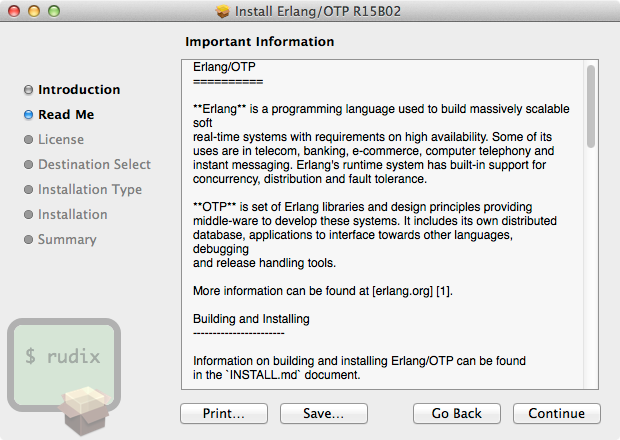
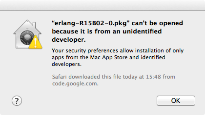

Erlang is a functional programming language used to build scalable real-time systems with high availability. OTP is a set of libraries and the foundation of these systems. In this article, you will learn how to install and use the latest version of Erlang/OTP R16B on Mavericks, Mountain Lion, Lion or Snow Leopard.
Rudix provides Erlang pre-compiled packages for Mavericks, Mountain Lion, Lion and Snow Leopard. The page you will going to access is rudix.org/packages/erlang.html.
After the download, double click the package and follow the installation instructions. Note that Erlang/OTP is big and requires (after installed) about 300MB of disk space.
Erlang/OTP will be installed under /usr/local/ and the full path for the Erlang/OTP interpreter will be /usr/local/bin/erl, but you don’t need to type the full path every time you want to call Erlang, it’s OK just to type erl on the Terminal to get the interpreter.
Important files:
/usr/local/bin/erl /usr/local/lib/erlang/ /usr/local/share/doc/erlang/README.md
On Mountain Lion and Mavericks things are a bit hard, you will probably get “erlang-R15B02-0.pkg” can’t be opened because it is from an unidentified developer. This means that the package was not registered with Apple – but you can choose to trust Rudix developers (I’m the author) and install anyway.
Here is how to bypass once your security settings:
Control key and click the package.And now follow the installation instructions.
Test if your installation is OK by printing “Hello World!”.
erl
Erlang R15B02 (erts-5.9.2) [source] [64-bit] [smp:2:2] [async-threads:0] [hipe] [kernel-poll:false]
Eshell V5.9.2 (abort with ^G)
1> io:fwrite("Hello World!").
Hello World!ok
Type Control+G, q and Return to exit. There’s a command halt(). with the same effect.